Note
Go to the end to download the full example code.
Artifact Correction with DSS.#
DSS is a powerful tool for removing artifacts (ECG, EOG) from data. The core idea is: Artifacts are repetitive.
If we can define when artifacts happen (e.g., using EOG/ECG channels), we can use Trial Average Bias to find the artifact source and remove it.
This tutorial demonstrates: 1. EOG (Blink) Correction: Epoching on blinks and using DSS to find the blink component. 2. ECG (Heartbeat) Correction: Epoching on heartbeats and finding the cardiac component.
- Authors: Sina Esmaeili (sina.esmaeili@umontreal.ca)
Hamza Abdelhedi (hamza.abdelhedi@umontreal.ca)
Imports#
import contextlib
import os
import matplotlib.pyplot as plt
import mne
import numpy as np
from mne.datasets import sample
from mne.preprocessing import create_ecg_epochs, create_eog_epochs
from mne_denoise.dss import DSS, AverageBias, CycleAverageBias
from mne_denoise.viz import (
plot_component_summary,
plot_component_time_series,
plot_evoked_comparison,
plot_psd_comparison,
plot_score_curve,
plot_spatial_patterns,
)
Load Data#
We use the MNE sample dataset which contains clear ECG and EOG artifacts.
print("Loading MNE Sample data...")
# Ensure MNE_DATA directory exists
home = os.path.expanduser("~")
mne_data_path = os.path.join(home, "mne_data")
if not os.path.exists(mne_data_path):
with contextlib.suppress(OSError):
os.makedirs(mne_data_path)
data_path = sample.data_path()
raw_fname = data_path / "MEG" / "sample" / "sample_audvis_raw.fif"
raw = mne.io.read_raw_fif(raw_fname, preload=True, verbose=False)
raw.crop(0, 60) # Keep full duration but no picking yet
print(f"Data: {len(raw.ch_names)} channels (MEG, EEG, EOG, ECG), 60s duration")
Loading MNE Sample data...
Data: 376 channels (MEG, EEG, EOG, ECG), 60s duration
Part 1: EOG (Blink) Correction#
Goal: Remove eye blinks. Bias: We epoch the data around blink events (found via EOG channel). The “blink artifact” is the component that is most consistent across these epochs.
print("\n--- Part 1: EOG (Blink) Correction ---")
# 1. Create EOG Epochs
eog_epochs = create_eog_epochs(
raw, ch_name="EOG 061", baseline=(-0.5, -0.2), tmin=-0.5, tmax=0.5, verbose=False
)
# IMPORTANT: DSS should be fitted on the data channels (MEG) we want to clean.
# We exclude the EOG channel itself from the model.
eog_epochs.pick_types(meg="grad", eog=False, ecg=False)
print(
f"Found {len(eog_epochs)} blink events. Using {len(eog_epochs.ch_names)} MEG channels."
)
# 2. Fit DSS with Trial Average Bias
# We use AverageBias(axis='epochs') which works on pre-epoched data.
# Note: We'll compare with CycleAverageBias later (artifact-specific approach).
dss_eog = DSS(n_components=10, bias=AverageBias(axis="epochs"), return_type="sources")
dss_eog.fit(eog_epochs)
--- Part 1: EOG (Blink) Correction ---
NOTE: pick_types() is a legacy function. New code should use inst.pick(...).
Found 10 blink events. Using 203 MEG channels.
/home/runner/work/mne-denoise/mne-denoise/mne_denoise/dss/linear.py:492: RuntimeWarning: Epochs are not baseline corrected, covariance matrix may be inaccurate
baseline_cov = mne.compute_covariance(inst, method=method, **kws)
/home/runner/work/mne-denoise/mne-denoise/mne_denoise/dss/linear.py:494: RuntimeWarning: Epochs are not baseline corrected, covariance matrix may be inaccurate
biased_cov = mne.compute_covariance(biased_inst, method=method, **kws)
Visualize Blink Components#
# 1. Score Curve
# * **Expectation**: Comp 0 should have a very high score (reproducible bias).
plot_score_curve(dss_eog, mode="ratio", show=False)
# 2. Time Series
# * **Expectation**: Comp 0 should look like a classic "V-shape" or bell-shape blink.
plot_component_time_series(dss_eog, data=eog_epochs, n_components=10, show=False)
# 3. Spatial Patterns
# * **Expectation**: Comp 0 should be strictly frontal.
plot_spatial_patterns(dss_eog, n_components=10, show=False)
# 4. Summary (Topo + Time + PSD)
plot_component_summary(dss_eog, data=eog_epochs, n_components=[0, 1], show=False)
- 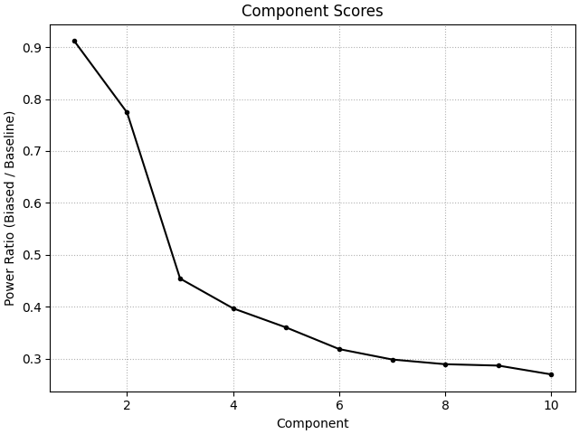
- 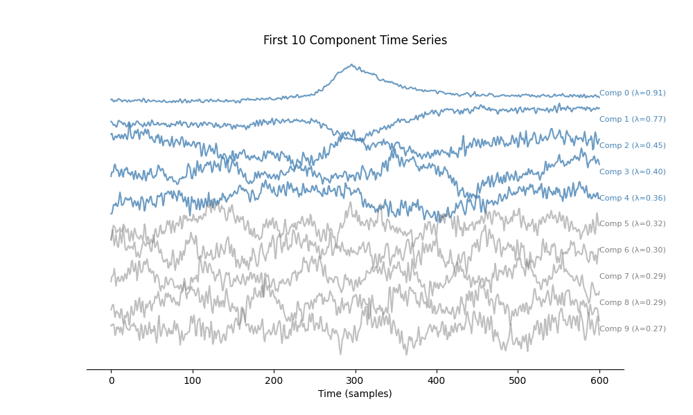
- 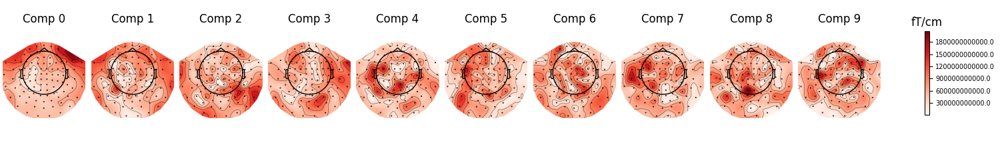
- 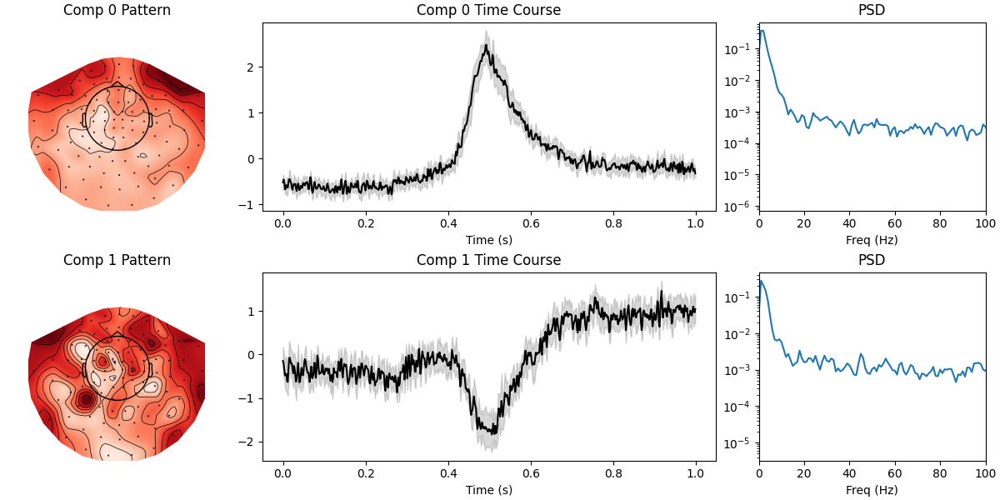
<Figure size 1200x600 with 6 Axes>
5. Denoising Comparison#
We project the data into the DSS space, zero out the first component (the blink), and project back.
print("Removing blink component...")
# Transform continuous data
# We must ensure we apply to the same channels used in fit (the gradiometers).
raw_meg = raw.copy().pick_types(meg="grad", eeg=False, eog=False, ecg=False)
sources = dss_eog.transform(raw_meg)
# Check Correlation with EOG channel
# This validates that Comp 0 is indeed the blink artifact.
eog_picks = mne.pick_types(raw.info, meg=False, eog=True)
if len(eog_picks) > 0:
eog_data = raw.get_data(picks=eog_picks[0]).flatten()
blink_source = sources[0, :]
for i in range(3):
comp_source = sources[i, :]
corr = np.corrcoef(eog_data, comp_source)[0, 1]
print(f"Correlation (Comp {i} vs EOG): {abs(corr):.3f}")
else:
print("No EOG channel found for correlation check.")
# Create dummy data for plot to avoid crash, or skip plot?
# We'll skip plot logic if no channel, but for now let's hope it exists.
eog_data = np.zeros(len(sources[0]))
blink_source = sources[0, :]
# Visual Comparison: EOG vs Component 0
# Show a time window with clear blinks, scaled and aligned
# Find a window with blinks (sample 5000-10000)
start_idx, end_idx = 5000, 10000
t_window = np.arange(start_idx, end_idx) / raw.info["sfreq"]
# Get data snippets
eog_snippet = eog_data[start_idx:end_idx]
comp_snippet = blink_source[start_idx:end_idx]
# Flip component if negatively correlated
corr_window = np.corrcoef(eog_snippet, comp_snippet)[0, 1]
flip = -1 if corr_window < 0 else 1
# Scale component to match EOG amplitude
scale = np.max(np.abs(eog_snippet)) / np.max(np.abs(comp_snippet))
plt.figure(figsize=(12, 4))
plt.plot(t_window, eog_snippet, "b", linewidth=1.5, label="EOG Channel")
plt.plot(
t_window,
flip * comp_snippet * scale,
"r",
linewidth=1.5,
label="DSS Comp 0 (aligned & scaled)",
alpha=0.8,
)
plt.xlabel("Time (s)")
plt.ylabel("Amplitude (a.u.)")
plt.title(f"TrialAverageBias: Blink Peaks Aligned (r={abs(corr):.3f})")
plt.legend()
plt.grid(True, alpha=0.3)
plt.tight_layout()
plt.show(block=False)
Removing blink component...
NOTE: pick_types() is a legacy function. New code should use inst.pick(...).
Correlation (Comp 0 vs EOG): 0.682
Correlation (Comp 1 vs EOG): 0.340
Correlation (Comp 2 vs EOG): 0.045
Alternative: CycleAverageBias (Continuous Data Approach)#
CycleAverageBias is artifact-specific and works directly on continuous data. Instead of pre-epoching, we provide event samples and a window.
print("\n--- Comparing with CycleAverageBias ---")
# Find blink events from continuous data
from mne.preprocessing import find_eog_events
blink_events = find_eog_events(raw, ch_name="EOG 061", verbose=False)
blink_samples = blink_events[:, 0]
print(f"Found {len(blink_samples)} blink events")
# Create CycleAverageBias
# Window: 100ms before to 100ms after each blink (in samples)
window_samples = (-int(0.1 * raw.info["sfreq"]), int(0.1 * raw.info["sfreq"]))
bias_cycle = CycleAverageBias(event_samples=blink_samples, window=window_samples)
# Fit DSS on continuous MEG data
dss_cycle = DSS(n_components=10, bias=bias_cycle, return_type="sources")
dss_cycle.fit(raw_meg)
print("Fitted DSS with CycleAverageBias")
--- Comparing with CycleAverageBias ---
Found 10 blink events
Fitted DSS with CycleAverageBias
Visualize Cycle Average Components#
plot_component_summary(dss_cycle, data=raw_meg, n_components=[0, 1], show=False)
plt.gcf().suptitle("CycleAverageBias Results")
plt.show(block=False)
# Compare spatial patterns (both bias types)
print("\n--- Comparing Spatial Patterns ---")
plot_spatial_patterns(dss_eog, n_components=1, show=False)
plt.gcf().suptitle("TrialAverageBias: Blink Component Topography")
plt.show(block=False)
plot_spatial_patterns(dss_cycle, n_components=1, show=False)
plt.gcf().suptitle("CycleAverageBias: Blink Component Topography")
plt.show(block=False)
print("\nBoth approaches extract the same blink artifact!")
print("- TrialAverageBias: Works on MNE Epochs (easier integration)")
print("- CycleAverageBias: Works on continuous data + event samples (more direct)")
- 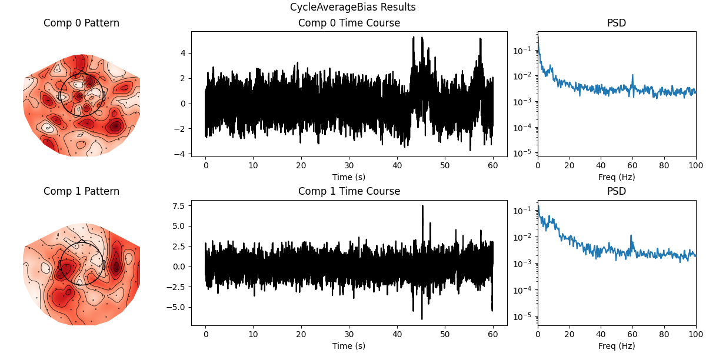
- 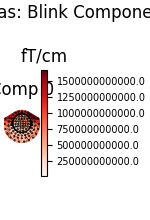
- 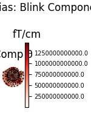
--- Comparing Spatial Patterns ---
Both approaches extract the same blink artifact!
- TrialAverageBias: Works on MNE Epochs (easier integration)
- CycleAverageBias: Works on continuous data + event samples (more direct)
n_samples_plot = int(20 * raw.info["sfreq"]) # Plot 20 seconds
scaler_eog = 1.0 / np.std(eog_data[:n_samples_plot])
scaler_dss = 1.0 / np.std(blink_source[:n_samples_plot])
# Flip DSS source if anti-correlated for better visual comparison
corr_0 = np.corrcoef(eog_data, blink_source)[0, 1]
sign = np.sign(corr_0)
if sign == 0:
sign = 1
plt.figure(figsize=(10, 4))
times_plot = raw.times[:n_samples_plot]
plt.plot(
times_plot,
eog_data[:n_samples_plot] * scaler_eog,
label="EOG Channel (Norm)",
color="tab:orange",
alpha=0.7,
)
plt.plot(
times_plot,
blink_source[:n_samples_plot] * scaler_dss * sign,
label="DSS Comp 0 (Sign-Matched)",
color="tab:blue",
alpha=0.7,
)
plt.title(f"Temporal Comparison: EOG vs DSS Comp 0 (Corr={abs(corr_0):.2f})")
plt.xlabel("Time (s)")
plt.legend()
plt.tight_layout()
plt.show()
# Zero out blink
sources[0, :] = 0 # Remove Comp 0
# Reconstruct
cleaned_data = dss_eog.inverse_transform(sources)
raw_clean_eog = mne.io.RawArray(cleaned_data, raw_meg.info)
# Compare Raw vs Cleaned on the Blink Epochs
# We verify improvement by looking at the average blink before/after.
# (We need to re-epoch the cleaned data to compare apples-to-apples)
eog_epochs_clean = mne.Epochs(
raw_clean_eog,
eog_epochs.events,
tmin=-0.5,
tmax=0.5,
baseline=(-0.5, -0.2),
verbose=False,
)
print("Plotting correction effect...")
# Expectation 1: The huge blink artifact in the 'Original' trace should be gone or massive reduced.
plot_evoked_comparison(
eog_epochs, eog_epochs_clean, show=False, labels=("Original", "Cleaned")
)
# Expectation 2: The PSD should be largely unchanged in the alpha/beta bands.
# Blinks are mostly low-frequency (<5 Hz). We want to ensure we didn't distort brain rhythms.
plot_psd_comparison(eog_epochs, eog_epochs_clean, fmax=40, show=True)
- 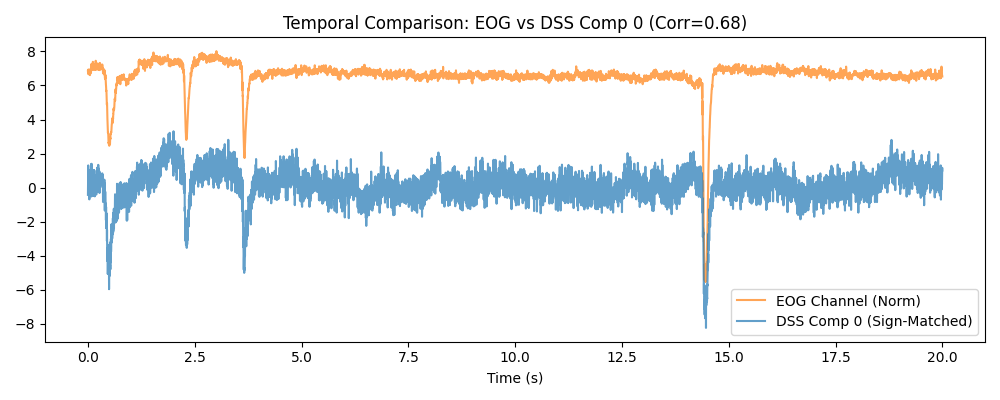
- 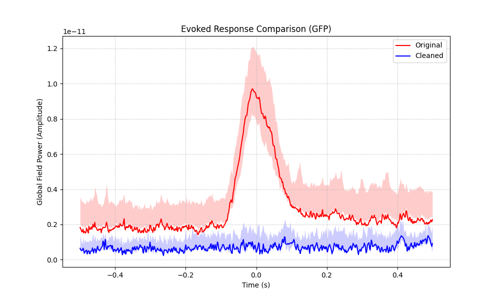
- 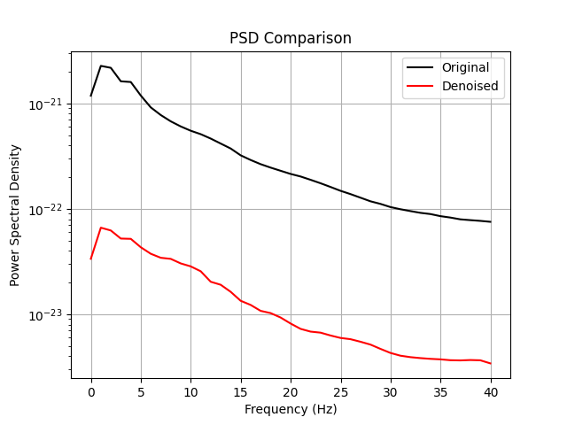
Creating RawArray with float64 data, n_channels=203, n_times=36038
Range : 0 ... 36037 = 0.000 ... 60.000 secs
Ready.
Plotting correction effect...
Using data from preloaded Raw for 10 events and 601 original time points ...
6 bad epochs dropped
Using data from preloaded Raw for 4 events and 601 original time points ...
Using multitaper spectrum estimation with 7 DPSS windows
Using data from preloaded Raw for 4 events and 601 original time points ...
Using multitaper spectrum estimation with 7 DPSS windows
<Figure size 640x480 with 1 Axes>
Part 2: ECG (Heartbeat) Correction#
Goal: Remove cardiac field artifact. Bias: Epoch around heartbeat (R-peak).
print("\n--- Part 2: ECG (Heartbeat) Correction ---")
# 1. Create ECG Epochs
# We let MNE find the ECG channel automatically (looking for type='ecg')
ecg_epochs = create_ecg_epochs(
raw, ch_name=None, tmin=-0.1, tmax=0.1, baseline=(None, 0), verbose=False
)
ecg_epochs.pick_types(meg="grad", eeg=False, eog=False, ecg=False)
print(
f"Found {len(ecg_epochs)} heartbeats. Using {len(ecg_epochs.ch_names)} MEG channels."
)
# 2. Fit DSS
dss_ecg = DSS(n_components=8, bias=AverageBias(axis="epochs"))
dss_ecg.fit(ecg_epochs)
--- Part 2: ECG (Heartbeat) Correction ---
NOTE: pick_types() is a legacy function. New code should use inst.pick(...).
Found 59 heartbeats. Using 203 MEG channels.
/home/runner/work/mne-denoise/mne-denoise/mne_denoise/dss/linear.py:492: RuntimeWarning: Epochs are not baseline corrected, covariance matrix may be inaccurate
baseline_cov = mne.compute_covariance(inst, method=method, **kws)
/home/runner/work/mne-denoise/mne-denoise/mne_denoise/dss/linear.py:494: RuntimeWarning: Epochs are not baseline corrected, covariance matrix may be inaccurate
biased_cov = mne.compute_covariance(biased_inst, method=method, **kws)
Visualize Cardiac Components#
# 1. Score Curve
plot_score_curve(dss_ecg, mode="ratio", show=False)
# 2. Time Series
# * **Expectation**: Comp 0 should look like a QRS complex.
plot_component_time_series(dss_ecg, data=ecg_epochs, n_components=8, show=False)
# 3. Spatial Patterns
# * **Expectation**: Deep/distant field pattern.
plot_spatial_patterns(dss_ecg, n_components=8, show=False)
# 4. Summary
plot_component_summary(dss_ecg, data=ecg_epochs, n_components=[0], show=False)
- 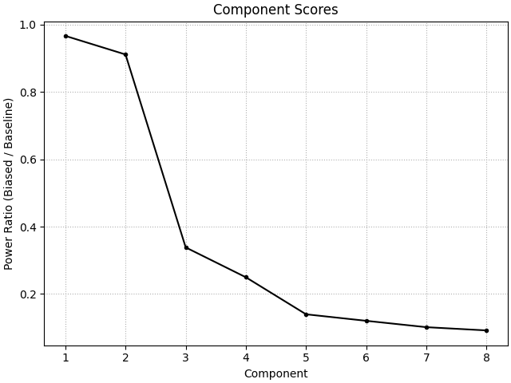
- 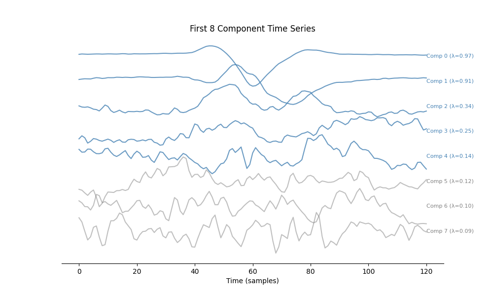
- 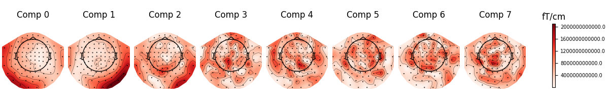
- 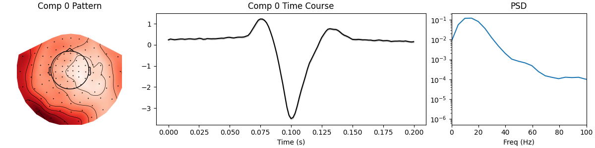
<Figure size 1200x300 with 3 Axes>
Removing the Artifact#
print("Removing cardiac component...")
sources_ecg = dss_ecg.transform(raw_meg) # Apply to continuous data
sources_ecg[0, :] = 0 # Zero out heartbeat
raw_clean_ecg = mne.io.RawArray(dss_ecg.inverse_transform(sources_ecg), raw_meg.info)
# Verification
ecg_epochs_clean = mne.Epochs(
raw_clean_ecg,
ecg_epochs.events,
tmin=-0.1,
tmax=0.1,
baseline=(None, 0),
verbose=False,
)
# Expectation 1: The QRS spike should be suppressed.
plot_evoked_comparison(
ecg_epochs, ecg_epochs_clean, show=False, labels=("Original", "Cleaned")
)
# Expectation 2: Cardiac harmonics (multiples of heart rate ~1.2 Hz) should be reduced,
# while alpha/beta peaks remain.
plot_psd_comparison(ecg_epochs, ecg_epochs_clean, fmax=40, show=True)
- 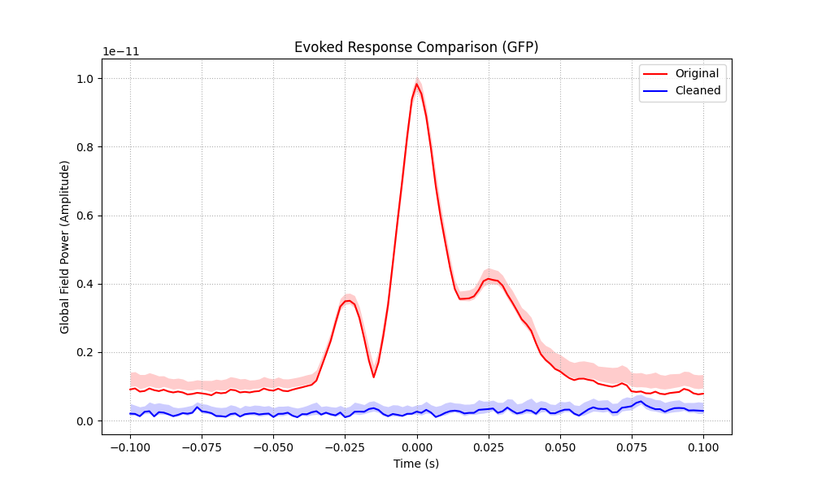
- 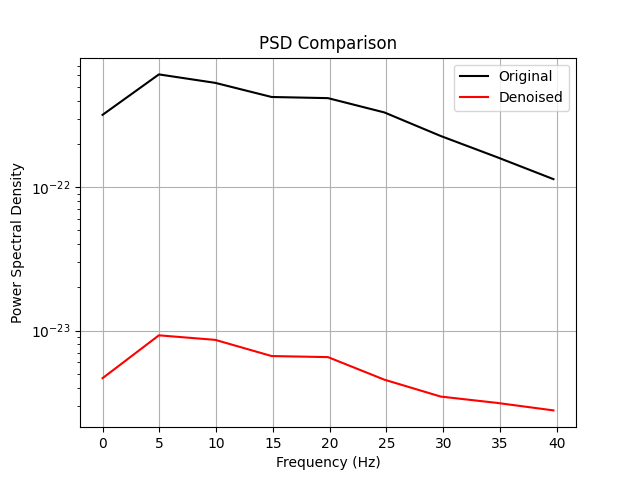
Removing cardiac component...
Creating RawArray with float64 data, n_channels=203, n_times=36038
Range : 0 ... 36037 = 0.000 ... 60.000 secs
Ready.
Using data from preloaded Raw for 59 events and 121 original time points ...
42 bad epochs dropped
Using data from preloaded Raw for 17 events and 121 original time points ...
Using multitaper spectrum estimation with 7 DPSS windows
Using data from preloaded Raw for 17 events and 121 original time points ...
Using multitaper spectrum estimation with 7 DPSS windows
<Figure size 640x480 with 1 Axes>
Conclusion#
We used DSS with AverageBias to find and remove stereotypic artifacts. * By epoching on the artifact events (blinks, heartbeats), we made the artifact “the signal of interest”. * DSS isolated perfectly. * We removed it by zeroing the component.
Total running time of the script: (0 minutes 10.597 seconds)